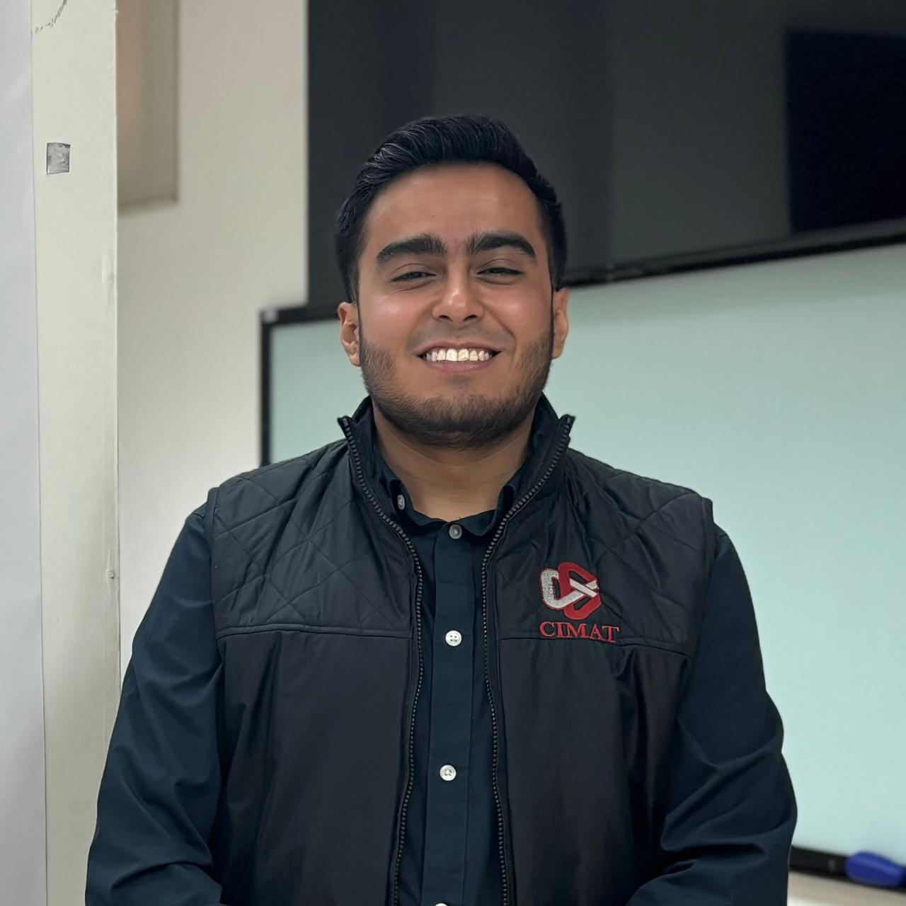

Data Scientist & Mathematician
Building end-to-end AI systems that turn messy, large-scale data into decisions. NLP pipelines, LLM agents, and real-time ML infrastructure — from theorem to production.

I'm a Data Scientist with a deep background in mathematics, specializing in NLP and LLM-based systems. I build things end-to-end — from raw data collection to deployed production infrastructure.
My work spans social listening intelligence, real-time content classification, deep learning for computer vision, and research-grade NLP for clinical text. I like problems that sit at the intersection of math, language, and scale.
Before industry, I completed an MSc in Computer Science at CIMAT with a thesis on Graph Convolutional Networks applied to depression classification — work that led to a peer-reviewed publication at NAACL 2024.
Dockerized ETL + NLP pipelines processing up to 1M+ documents per run. Ingests data from X API, Google, Apify and custom scrapers. Reduced reporting time by ~40% across political and business clients.
Migrated legacy ML pipelines to LLM-based systems using OpenAI API and LangChain for high-volume content classification and anomalous activity detection with real-time monitoring.
Deep learning pipeline for real-time demographic analysis deployed as a scalable AWS endpoint. Built for production-grade inference with high throughput requirements.
MSc thesis project. Graph Convolutional Networks + topic modeling applied to the DAIC-WOZ clinical interview dataset. Includes bias analysis. Led to a NAACL 2024 publication.
Peer-reviewed paper presented at NAACL 2024. We combined transformer-based representations, graph neural networks, and topic modeling to improve classification of depressive language in clinical interview transcripts (DAIC-WOZ dataset). The work also includes a structural bias analysis of the dataset.
Open to full-time roles, consulting, and research collaborations. Especially interested in NLP, LLM systems, and applied AI at scale.